红石机制
本栏目共 29 篇技术性图文。红石电路、方块更新、计划刻、活塞与观察者、漏斗与铁轨等底层机制。点击任意一篇即可阅读全文，配图均已本地化保存。
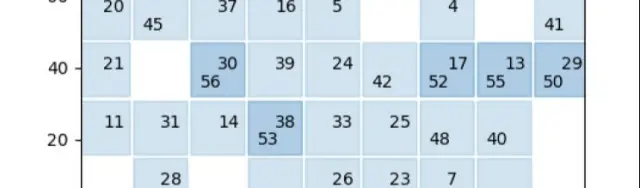
世界是如何运行的--MCBE 方块更新机制不完整分析
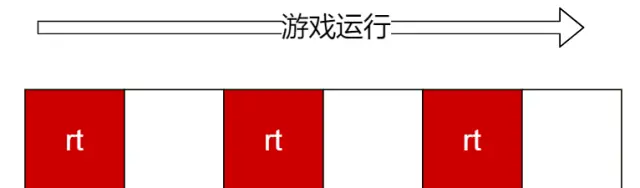
MCBE 红石系统运行不完全分析(1)
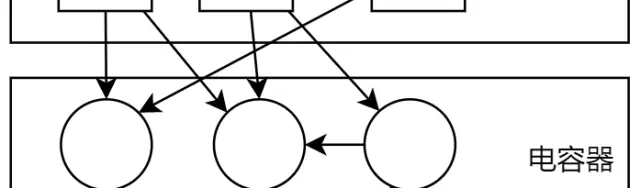
MCBE 红石系统运行不完全分析(2)
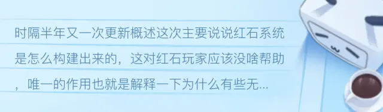
MCBE 红石系统运行不完全分析(3)
MCBE 红石系统运行不完全分析(4)——活塞
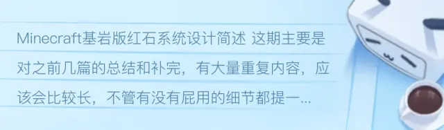
Minecraft基岩版红石系统设计简述
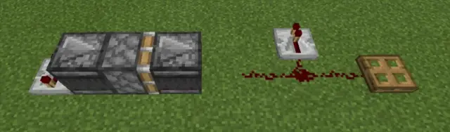
MCBE 红石电路延迟不完全分析
曾出现在基岩版的"玄学现象" ~ 红石粉信号强度的计算
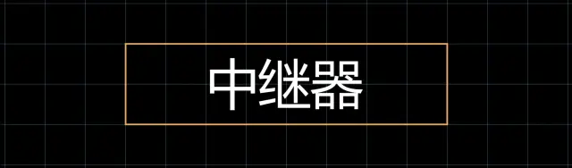
MCBE 中继器输出信号计算
MCBE 观察者的宏观延时计算方法
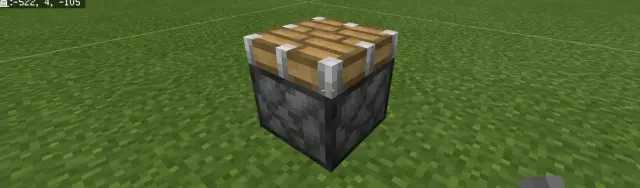
MCBE 活塞特性机制和宏观延时计算
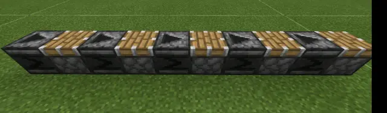
观察者/活塞续篇：多重组合元件的情况分析
MCBE 观察者跨区块为什么会坏掉?
MCBE 活塞的一些简单应用-续续篇
基岩版中的方块与方块实体等
MCBE 基岩版红石粉压线与引线机制
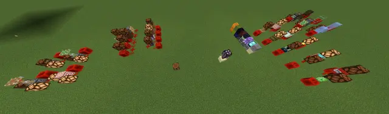
MCBE 部分特殊性质方块汇总（红石相关）
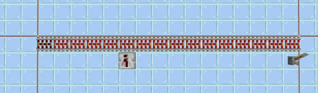
MCBE 铁轨的搜索及无延迟铁轨的部分解释（1.20+）
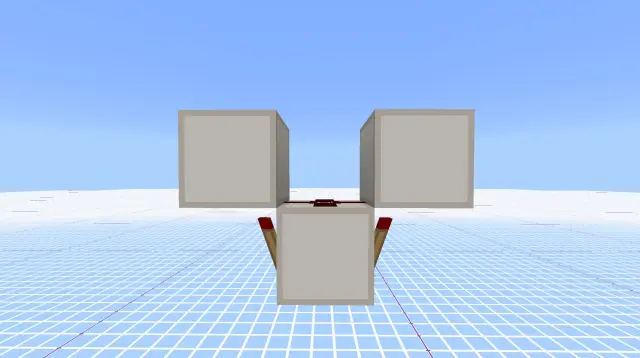
MCBE 红石火把与无线电底层分析
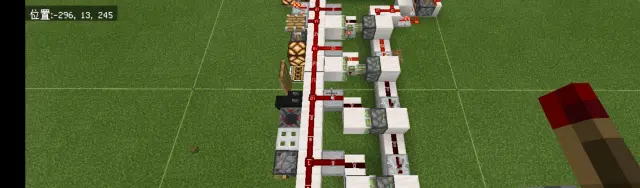
切断烧火把特性研究报告
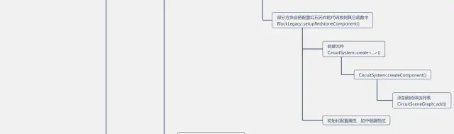
MCBE 方块被放置后发生了什么？方块更新如何影响红石系统？
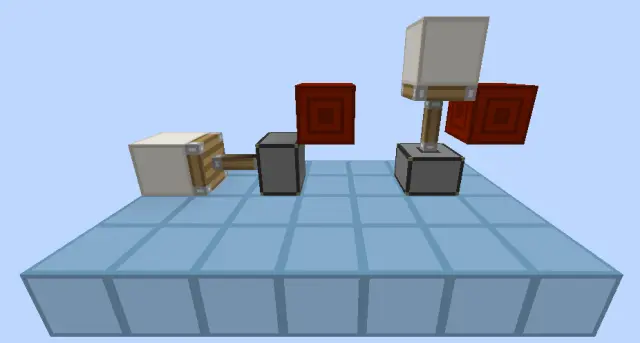
MCJE 活塞BUD?QC?傻傻分不清？一篇文章讲清楚
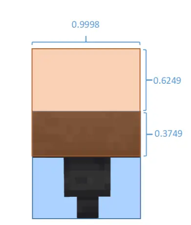
MCBE 关于漏斗的一些特性分析
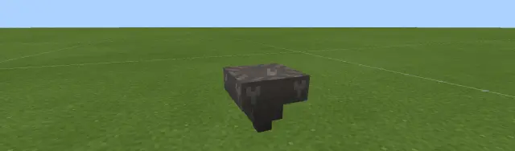
MCBE 常见漏斗行为简述
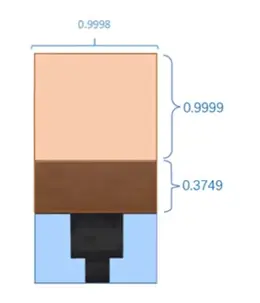
MCBE 漏斗一些行为的补充和介绍
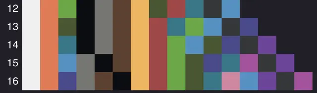
如何建造一条无延迟投掷器链––MCBE 计划刻机制详解
活塞-方块系统源码解析一：mb和方块实体的性质
方块替换中方块和方块实体的变化解析
活塞-方块系统源码解析二：活塞方块实体的作用（其一）